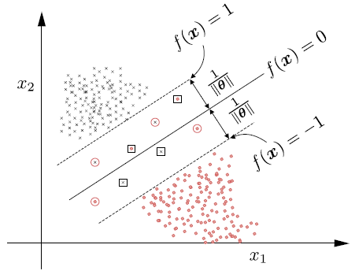

2#
Usando lo visto en clase y las condiciones KKT, escriba el problema dual de SVM para el caso
no separable más general (con variables de holgura y función transformadora φ). Con la función
quadprog de Matlab (o su equivalente en Python o cualquier otro lenguaje de su escogencia) y un
código para la función de generalización de su autoría, resuelva el problema con la base de datos flor
de iris (https://es.wikipedia.org/wiki/Conjunto_de_datos_flor_iris) para clasificar las clases de
plantas Iris-Setosa e Iris-Virgínica. Use varios valores de C y diferentes tipos de kernels. Determine
el error de su clasificación en cada caso y obtenga conclusiones.
Caso no Separable#
Antes de empezar a desarrollar cada iten de esta parte 2 entenderemos lo que son los casos no separble. Se entiende como caso no seprable cuando no existe un clasificador lineal que pueda clasificar correctamente todos los puntos por ende algunos errores de clasificación pueden ocurrir. Existen tres tipos de puntos mal clasificados.
1. Puntos en la frontera o fuera del margen en el lado correcto del clasificador:#
es decir cuando: $\( y_n f(\mathbf{x}_n) \geq 1 \)$
Estos puntos se encuentran en la frontera del margen de decisión o en el lado correcto, pero potencialmente fuera del margen. No cometen errores de clasificación.
Variables de holgura: \( \xi_n = 0 \) ya que estos puntos no requieren ninguna holgura para ser clasificados correctamente.
2. Puntos en el lado correcto del clasificador, pero dentro del margen:#
Cuando: $\( 0 < y_n f(\mathbf{x}_n) < 1 \)$
Estos puntos están correctamente clasificados pero se encuentran dentro del margen. Cometen un error de margen.
Variables de holgura: \( 0 < \xi_n < 1 \). El valor de \( \xi_n \) mide el grado de violación del margen por parte del punto correspondiente.
Las variables de holgura \( \xi_n \) son fundamentales en la formulación del problema de optimización de SVM. Permiten que el modelo tolere ciertas violaciones del margen, siendo reguladas por el parámetro de penalización \( C \), y forman parte del objetivo de minimización en la función de coste de SVM.
3. Puntos que se encuentran en el lugar equivocado del clasificador:#
Cuando: \(y_n f(\mathbf{x}_n) \leq 0\)
Estos puntos están mal clasificados y se encuentran en el lado incorrecto del hiperplano de decisión.
Variables de holgura: \(\xi_n \geq 1\). Estos valores indican una violación considerable del margen, ya que no solo están dentro del margen, sino que están completamente en el lado equivocado.
Graficamente:#

Línea sólida: Representa el hiperplano de decisión donde \(f(\mathbf{x}) = 0\).
Líneas discontinuas: Representan el margen del clasificador donde \(f(\mathbf{x}) = 1\) y \(f(\mathbf{x}) = -1\).
Símbolos:
Estrellas: Puntos fuera o en los límites del margen y clasificados correctamente.
Círculos: Puntos dentro del margen, aún del lado correcto, pero cometiendo u
Derivación del Lagrangiano#
Consideremos un problema de optimización de la siguiente forma:
Función Objetivo: \(f(x)\), que queremos maximizar o minimizar.
Restricciones: \(g_i(x) = 0\), donde \(i\) varía de 1 a \(m\), siendo \(m\) el número total de restricciones de igualdad.
Para incorporar las restricciones dentro de la función objetivo, introducimos los multiplicadores de Lagrange \(\lambda_i\) para cada restricción \(g_i(x)\) y construimos la función Lagrangiana \(\mathcal{L}\) como:
Aquí, \(x\) representa el vector de variables de decisión y \(\lambda\) el vector de multiplicadores de Lagrange.
Aplicación a un Problema de Optimización#
Para aplicar el Lagrangiano a un problema de optimización, seguimos los siguientes pasos:
Formulación del Lagrangiano: Combinamos la función objetivo y las restricciones en la función Lagrangiana.
Encontrar las Condiciones de Estacionariedad: Derivamos el Lagrangiano con respecto a todas las variables, incluyendo los multiplicadores de Lagrange, y buscamos los puntos donde estas derivadas se anulan. Esto nos da un sistema de ecuaciones para resolver.
Verificar Otras Condiciones (KKT): Para problemas con restricciones de desigualdad, necesitamos verificar las condiciones de Karush-Kuhn-Tucker, que incluyen la factibilidad primal y dual, la complementariedad y la condición de slack.
Interpretación de los Multiplicadores de Lagrange: Los valores de los multiplicadores de Lagrange en la solución óptima nos indican la sensibilidad de la función objetivo ante cambios marginales en las restricciones.
Ejemplo en Optimización de SVM#
En el contexto de Máquinas de Soporte Vectorial (SVM) para clasificación, buscamos maximizar el margen entre las dos clases sujetas a que todas las muestras estén correctamente clasificadas. El Lagrangiano para el problema de optimización de SVM con variables de holgura \(\xi\) (para permitir clasificaciones erróneas) y una función de transformación \(\phi\) (para mapear las muestras a un espacio donde sean linealmente separables) es:
Donde:
\(w\) es el vector de pesos del hiperplano.
\(b\) es el término de sesgo del hiperplano.
\(\xi\) es el vector de variables de holgura.
\(C\) es el parámetro de penalización para las variables de holgura.
\(\lambda\) y \(\mu\) son los multiplicadores de Lagrange que aplican las restricciones del problema.
El uso de la función \(\phi\) permite aplicar el truco del kernel en SVM, lo que facilita el cálculo de los productos internos en un espacio dimensional superior sin la necesidad de calcular la transformación explícitamente.
Formulación del Problema Dual de SVM No Separable#
La formulación del problema dual de SVM no separable comienza con la función de Lagrange asociada al problema de optimización primal.
El Lagrangiano ( L ) es dado por:
Donde:
\(\mathbf{w}\) es el vector de pesos del hiperplano.
\(b\) es el término de sesgo del hiperplano.
\(\boldsymbol{\xi}\) es el vector de variables de holgura.
\(C\) es el parámetro de penalización para las variables de holgura.
\(\boldsymbol{\lambda}\) y \(\boldsymbol{\mu}\) son los multiplicadores de Lagrange.
Aplicación de las Condiciones KKT#
Para obtener el problema dual, aplicamos las condiciones de Karush-Kuhn-Tucker (KKT).
Condiciones de Estacionariedad:#
Las derivadas parciales del Lagrangiano respecto a \(\mathbf{w}\), \(b\), y \(\boldsymbol{\xi}\) deben ser cero.
Condiciones de Complementariedad:#
Para los multiplicadores de Lagrange, se debe cumplir:
Condiciones de Holgura Primal y Dual:#
Las restricciones originales y las variables de holgura deben cumplir:
Formulación del Problema Dual#
Sustituimos \(\mathbf{w}\) y \(\boldsymbol{\xi}\) en el Lagrangiano y maximizamos respecto a \(\boldsymbol{\lambda}\) con las restricciones anteriores. El problema dual resultante es:
Maximizar respecto a \(\boldsymbol{\lambda}\):
Sujeto a:
Este es el problema dual de SVM no separable. Resolviendo este problema obtenemos los multiplicadores de Lagrange que luego podemos utilizar para construir nuestro clasificador SVM.
import plotly.express as px
from sklearn import datasets
import pandas as pd
# Cargamos el conjunto de datos Iris
iris = datasets.load_iris()
X = iris.data
y = iris.target
# Convertimos a un DataFrame de Pandas
df = pd.DataFrame(X, columns=iris.feature_names)
df['species'] = pd.Categorical.from_codes(iris.target, iris.target_names)
# Creamos un gráfico 3D interactivo
fig = px.scatter_3d(df, x='sepal length (cm)', y='sepal width (cm)', z='petal length (cm)',
color='species')
# Mostrar el gráfico
fig.show()
c:\Users\Edward Morales\miniconda3\envs\ml_venv\lib\site-packages\plotly\express\_core.py:2044: FutureWarning: The default of observed=False is deprecated and will be changed to True in a future version of pandas. Pass observed=False to retain current behavior or observed=True to adopt the future default and silence this warning.
grouped = df.groupby(required_grouper, sort=False) # skip one_group groupers
Filtro los datos a los que necesito para el ejercicio, borramos las filas “setosa”
#renombro el df
column_names = df.columns.tolist()
print("Nombres de columnas de características:", column_names)
df.columns = ['sepal length', 'sepal width', 'petal length', 'petal width','class']
#filtro, quito versicolor
iris_df_filtered = df[df['class'] != 'setosa']
if 'setosa' in iris_df_filtered['class'].cat.categories:
iris_df_filtered['class'] = iris_df_filtered['class'].cat.remove_categories(['setosa'])
#defino X & y
X = iris_df_filtered.drop(columns=['class'])
y = iris_df_filtered['class']
#Vemos sus caracteristicas
print(X.describe())
print(y.describe())
print(y.value_counts())
Nombres de columnas de características: ['sepal length (cm)', 'sepal width (cm)', 'petal length (cm)', 'petal width (cm)', 'species']
sepal length sepal width petal length petal width
count 100.000000 100.000000 100.000000 100.000000
mean 6.262000 2.872000 4.906000 1.676000
std 0.662834 0.332751 0.825578 0.424769
min 4.900000 2.000000 3.000000 1.000000
25% 5.800000 2.700000 4.375000 1.300000
50% 6.300000 2.900000 4.900000 1.600000
75% 6.700000 3.025000 5.525000 2.000000
max 7.900000 3.800000 6.900000 2.500000
count 100
unique 2
top versicolor
freq 50
Name: class, dtype: object
class
versicolor 50
virginica 50
Name: count, dtype: int64
C:\Users\Edward Morales\AppData\Local\Temp\ipykernel_92220\1321155144.py:9: SettingWithCopyWarning:
A value is trying to be set on a copy of a slice from a DataFrame.
Try using .loc[row_indexer,col_indexer] = value instead
See the caveats in the documentation: https://pandas.pydata.org/pandas-docs/stable/user_guide/indexing.html#returning-a-view-versus-a-copy
import seaborn as sns
sns.heatmap(X.corr(), annot=True, fmt='.2f')
<Axes: >
Vemos que en esta matriz de confucion hay diferentes correlaciones y aplicamos nuevamente el VIF
from statsmodels.stats.outliers_influence import variance_inflation_factor
from statsmodels.tools.tools import add_constant
# Asumiendo que 'X' es tu DataFrame y ya tiene las columnas de interés
df_with_const = add_constant(X)
# Calcula el VIF para cada variable predictora
vif_data = pd.DataFrame() # Usa 'pd.DataFrame()' en lugar de 'X.DataFrame()'
vif_data["Variable"] = df_with_const.columns
vif_data["VIF"] = [variance_inflation_factor(df_with_const.values, i) for i in range(df_with_const.shape[1])]
print(vif_data)
Variable VIF
0 const 125.170277
1 sepal length 3.990113
2 sepal width 1.721954
3 petal length 7.252447
4 petal width 3.948354
Eliminar la variable “petal length” ya que es la que tiene el VIF más alto, al hacer esto nos quedamos con variables más importantes
from statsmodels.stats.outliers_influence import variance_inflation_factor
from statsmodels.tools.tools import add_constant
# Asumiendo que 'X' es tu DataFrame y ya tiene las columnas de interés
VIX = X[['sepal length', 'sepal width', 'petal width']]
df_with_const = add_constant(VIX)
# Calcula el VIF para cada variable predictora
vif_data = pd.DataFrame() # Usa 'pd.DataFrame()' en lugar de 'X.DataFrame()'
vif_data["Variable"] = df_with_const.columns
vif_data["VIF"] = [variance_inflation_factor(df_with_const.values, i) for i in range(df_with_const.shape[1])]
print(vif_data)
Variable VIF
0 const 122.240203
1 sepal length 1.730834
2 sepal width 1.649553
3 petal width 1.766067
En este caso todas tiene un VIF muy cercano a 1, lo que es perfecto ya que 1 represneta que no existe multicolinealidad (en el rango de 1 a 5)
sns.heatmap(VIX.corr(), annot=True, fmt='.2f')
<Axes: >

Nos quendamos nuevamente con las variables más importates.
iris_df_filtered = iris_df_filtered.drop(columns = ["petal length"]) # Quito la columna petal length del df
Me quedo con VIX, como la svaribles explicativas, y las etiquetas e iris_df como el data frame
import matplotlib.pyplot as plt
sns.pairplot(iris_df_filtered, hue='class')
plt.show()
En este caso se ve que los datos estan mucho más juntos y es realmente dificil separalos lienalmente.
Implementación del modelo#
import warnings
warnings.filterwarnings('ignore')
from sklearn.datasets import make_blobs
import mglearn
import matplotlib.pyplot as plt
import numpy as np
from sklearn.svm import LinearSVC
iris_df_filtered.head()
| sepal length | sepal width | petal width | class | |
|---|---|---|---|---|
| 50 | 7.0 | 3.2 | 1.4 | versicolor |
| 51 | 6.4 | 3.2 | 1.5 | versicolor |
| 52 | 6.9 | 3.1 | 1.5 | versicolor |
| 53 | 5.5 | 2.3 | 1.3 | versicolor |
| 54 | 6.5 | 2.8 | 1.5 | versicolor |
import plotly.express as px
import pandas as pd
fig = px.scatter_3d(iris_df_filtered, x='sepal length', y='sepal width', z='petal width',
color='class', symbol='class')
# Mostrar el gráfico
fig.show()
Y aun graficando 3D se ven los datos muy pegado.
import plotly.express as px
from sklearn import svm
from sklearn.preprocessing import LabelEncoder
import numpy as np
import plotly.graph_objs as go
# Codificamos las etiquetas de clase
encoder = LabelEncoder()
y_encoded = encoder.fit_transform(iris_df_filtered['class'])
# Entrenamos el clasificador SVM con un kernel lineal
clf = svm.SVC(kernel='linear')
clf.fit(iris_df_filtered[['sepal length', 'sepal width', 'petal width']], y_encoded)
# Coeficientes del hiperplano
w = clf.coef_[0]
v = clf.intercept_
# Creamos un gráfico 3D interactivo usando plotly express
fig = px.scatter_3d(iris_df_filtered, x='sepal length', y='sepal width', z='petal width',
color='class', symbol='class')
# Creamos la malla para el hiperplano
xx, yy = np.meshgrid(np.linspace(iris_df_filtered['sepal length'].min(), iris_df_filtered['sepal length'].max(), 50),
np.linspace(iris_df_filtered['sepal width'].min(), iris_df_filtered['sepal width'].max(), 50))
zz = (-w[0] * xx - w[1] * yy - v) / w[2]
# Añadimos el hiperplano al gráfico
fig.add_traces(go.Surface(x=xx, y=yy, z=zz, name='SVM Hyperplane', opacity=0.5, showscale=False))
# Mostrar el gráfico
fig.show()
Y podemos ver como aun con todos los datos hiperplano dado por SVM comote muchos errores.
import pandas as pd
import numpy as np
from sklearn.model_selection import train_test_split
iris_df = iris_df_filtered.sample(frac=1).reset_index(drop=True)
# Separa las clases
versicolor = iris_df[iris_df['class'] == 'versicolor']
virginica = iris_df[iris_df['class'] == 'virginica']
# Selecciona 5 muestras aleatorias de cada clase para el conjunto de prueba
versicolor_test = versicolor.sample(5)
virginica_test = virginica.sample(5)
# Concatena las muestras de prueba en un único DataFrame
test_df = pd.concat([versicolor_test, virginica_test])
# Elimina las muestras de prueba del DataFrame original para obtener el conjunto de entrenamiento
train_df = iris_df.drop(test_df.index)
# Ahora tienes tus conjuntos de entrenamiento y prueba
print("Conjunto de Entrenamiento:")
print(train_df)
print("\nConjunto de Prueba:")
print(test_df)
# Si necesitas las características y las etiquetas por separado:
X_train = train_df[['sepal length', 'sepal width', 'petal width']]
y_train = train_df['class']
X_test = test_df[['sepal length', 'sepal width', 'petal width']]
y_test = test_df['class']
Conjunto de Entrenamiento:
sepal length sepal width petal width class
1 7.1 3.0 2.1 virginica
2 6.5 3.2 2.0 virginica
3 6.1 2.8 1.2 versicolor
4 6.0 3.0 1.8 virginica
5 6.5 2.8 1.5 versicolor
.. ... ... ... ...
94 6.2 3.4 2.3 virginica
95 6.8 2.8 1.4 versicolor
97 6.3 3.3 1.6 versicolor
98 7.7 3.0 2.3 virginica
99 6.0 2.2 1.5 virginica
[90 rows x 4 columns]
Conjunto de Prueba:
sepal length sepal width petal width class
96 5.8 2.7 1.0 versicolor
58 6.1 3.0 1.4 versicolor
10 5.5 2.5 1.3 versicolor
0 5.7 2.6 1.0 versicolor
74 6.2 2.2 1.5 versicolor
49 6.1 2.6 1.4 virginica
62 6.4 2.8 2.2 virginica
20 7.7 3.8 2.2 virginica
73 6.7 3.0 2.3 virginica
42 6.9 3.2 2.3 virginica
Separo los datos en entrenamiento y testeo para escalarlos.
Preprocesamiento#
X_train.shape
min_on_training = X_train.min(axis=0)
min_on_training.shape
range_on_training = (X_train - min_on_training).max(axis=0)
range_on_training.shape
X_train_scaled = (X_train - min_on_training) / range_on_training
print("Minimum for each feature\n{}".format(X_train_scaled.min(axis=0)))
print("Maximum for each feature\n {}".format(X_train_scaled.max(axis=0)))
Minimum for each feature
sepal length 0.0
sepal width 0.0
petal width 0.0
dtype: float64
Maximum for each feature
sepal length 1.0
sepal width 1.0
petal width 1.0
dtype: float64
X_test_scaled = (X_test - min_on_training) / range_on_training
from sklearn.svm import SVC
svc = SVC()
svc.fit(X_train_scaled, y_train)
print("Accuracy on training set: {:.3f}".format(svc.score(X_train_scaled, y_train)))
print("Accuracy on test set: {:.3f}".format(svc.score(X_test_scaled, y_test)))
Accuracy on training set: 0.956
Accuracy on test set: 0.900
Entrenamos un modelo con los parametros por defecto y vemos que su puntaje Accuracy (datos bien clasificados / todos los datos)
svc_C01 = SVC(C=.001)
svc_C01.fit(X_train_scaled, y_train)
print("Accuracy on training set: {:.3f}".format(svc_C01.score(X_train_scaled, y_train)))
print("Accuracy on test set: {:.3f}".format(svc_C01.score(X_test_scaled, y_test)))
Accuracy on training set: 0.944
Accuracy on test set: 0.900
Provando con un \(C\) diferente vemos como empeora, ahora veremos unos graficos que los mostratan de mejor forma.
import matplotlib.pyplot as plt
import numpy as np
from sklearn.svm import SVC
from sklearn.preprocessing import StandardScaler
# Asumiendo que tienes dos conjuntos de datos: 'train_df' y 'test_df'
# Primero, selecciona solo las columnas que vas a utilizar para el entrenamiento y las etiquetas
features = ['sepal length', 'petal width'] # Reemplaza con las características que deseas usar
X_train = train_df[features].values
y_train = train_df['class'].map({'virginica': 0, 'versicolor': 1}).values # Codifica las clases a valores numéricos
# Escala las características
scaler = StandardScaler()
X_train_scaled = scaler.fit_transform(X_train)
# Valores de C y gamma para probar, en escala logarítmica
C_values = [0.1, 1, 10]
gamma_values = [0.1, 1, 10]
# Crear subplots
fig, axes = plt.subplots(3, 3, figsize=(15, 10))
for i, C in enumerate(C_values):
for j, gamma in enumerate(gamma_values):
ax = axes[i, j]
# Entrena el modelo SVM
svc = SVC(C=C, gamma=gamma)
svc.fit(X_train_scaled, y_train)
# Crea una malla de puntos para dibujar la frontera de decisión
h = .02 # Tamaño del paso en la malla
x_min, x_max = X_train_scaled[:, 0].min() - 1, X_train_scaled[:, 0].max() + 1
y_min, y_max = X_train_scaled[:, 1].min() - 1, X_train_scaled[:, 1].max() + 1
xx, yy = np.meshgrid(np.arange(x_min, x_max, h), np.arange(y_min, y_max, h))
# Predice las etiquetas para cada punto en la malla y redimensiona para el gráfico
Z = svc.predict(np.c_[xx.ravel(), yy.ravel()])
Z = Z.reshape(xx.shape)
# Dibuja la frontera de decisión y los puntos de datos
ax.contourf(xx, yy, Z, cmap=plt.cm.coolwarm, alpha=0.8)
ax.scatter(X_train_scaled[:, 0], X_train_scaled[:, 1], c=y_train, cmap=plt.cm.coolwarm, edgecolors='k')
ax.set_title(f'C={C}, gamma={gamma}')
# Mostrar el gráfico
plt.tight_layout()
plt.show()

Aqui se entreno otro modelo, con solo dos caracteristicas para asi poder graficar como cambia el funcionamiento con los diferentes parametros
Entrnado el SVM con diferentes hiperparametros vemos como cada uno obtiene diferestes resultados y devemos escoger el que tenga mejores resultados para poder predecir.
import pandas as pd
import numpy as np
from sklearn.model_selection import train_test_split
iris_df = iris_df_filtered.sample(frac=1).reset_index(drop=True)
# Separa las clases
versicolor = iris_df[iris_df['class'] == 'versicolor']
virginica = iris_df[iris_df['class'] == 'virginica']
# Selecciona 5 muestras aleatorias de cada clase para el conjunto de prueba
versicolor_test = versicolor.sample(15)
virginica_test = virginica.sample(15)
# Concatena las muestras de prueba en un único DataFrame
test_df = pd.concat([versicolor_test, virginica_test])
# Elimina las muestras de prueba del DataFrame original para obtener el conjunto de entrenamiento
train_df = iris_df.drop(test_df.index)
# Ahora tienes tus conjuntos de entrenamiento y prueba
#print("Conjunto de Entrenamiento:")
#print(train_df)
#print("\nConjunto de Prueba:")
#print(test_df)
# Si necesitas las características y las etiquetas por separado:
X_train = train_df[['sepal length', 'sepal width', 'petal width']]
y_train = train_df['class']
X_test = test_df[['sepal length', 'sepal width', 'petal width']]
y_test = test_df['class']
X_train.shape
min_on_training = X_train.min(axis=0)
min_on_training.shape
range_on_training = (X_train - min_on_training).max(axis=0)
range_on_training.shape
X_train_scaled = (X_train - min_on_training) / range_on_training
X_test_scaled = (X_test - min_on_training) / range_on_training
y_train = np.where(y_train == 'virginica', -1, 1)
y_test_encoded = np.where(y_test == 'virginica', -1, 1)
Manual#
import numpy as np
from cvxopt import matrix, solvers
def train_svm(X_train, y_train, C=1.0):
n_samples, n_features = X_train.shape
K = np.dot(X_train, X_train.T)
P = matrix(np.outer(y_train, y_train) * K)
q = matrix(-np.ones((n_samples, 1)))
G = matrix(np.vstack((-np.eye(n_samples), np.eye(n_samples))))
h = matrix(np.hstack((np.zeros(n_samples), np.ones(n_samples) * C)))
A = matrix(y_train, (1, n_samples), 'd')
b = matrix(0.0)
solvers.options['show_progress'] = False
solution = solvers.qp(P, q, G, h, A, b)
lambdas = np.array(solution['x']).flatten()
support_vectors = lambdas > 1e-5
ind = np.arange(len(lambdas))[support_vectors]
lambdas = lambdas[support_vectors]
sv = X_train[support_vectors]
sv_y = y_train[support_vectors]
b = np.mean([y_k - np.sum(lambdas * sv_y * K[ind_k, support_vectors])
for ind_k, y_k in zip(ind, sv_y)])
return lambdas, sv, sv_y, b
def svm_predict(X, lambdas, sv, sv_y, b):
return np.sign(np.sum(lambdas * sv_y * np.dot(X, sv.T), axis=1) + b)
# Ejemplo de uso
# Asumiendo que X_train_scaled y y_train son tus datos y etiquetas de entrenamiento ya preparados
C_value = 1000 # Puedes cambiar este valor según sea necesario
lambdas, sv, sv_y, b = train_svm(X_train_scaled, y_train, C=C_value)
y_test_predicted = svm_predict(X_test_scaled, lambdas, sv, sv_y, b)
# Aquí puedes usar y_test_predicted para calcular métricas o realizar otras tareas
import numpy as np
from sklearn.metrics import confusion_matrix, accuracy_score, recall_score, precision_score, f1_score
import seaborn as sns
import matplotlib.pyplot as plt
y_pred = y_test_predicted
# Calculamos la matriz de confusión y mostramos los errores
conf_mat = confusion_matrix(y_test_encoded, y_pred)
# Calculamos los errores
FP = conf_mat.sum(axis=0) - np.diag(conf_mat)
FN = conf_mat.sum(axis=1) - np.diag(conf_mat)
TP = np.diag(conf_mat)
TN = conf_mat.sum() - (FP + FN + TP)
# Calculamos las métricas de evaluación
accuracy = accuracy_score(y_test_encoded, y_pred)
precision = precision_score(y_test_encoded, y_pred)
recall = recall_score(y_test_encoded, y_pred)
f1 = f1_score(y_test_encoded, y_pred)
print(f"Accuracy: {accuracy}")
print(f"Precision: {precision}")
print(f"Recall: {recall}")
print(f"F1 Score: {f1}")
# Visualizamos la matriz de confusión como un mapa de calor
plt.figure(figsize=(8, 6))
sns.heatmap(conf_mat, annot=True, fmt="d", cmap="Blues")
plt.title("Matriz de Confusión")
plt.ylabel('Verdaderos')
plt.xlabel('Predicciones')
plt.show()
# Para graficar predicho vs real, necesitamos una visualización 2D
# Esto solo tiene sentido si estamos trabajando con 2 características
# Si es el caso, podemos graficar las características en los ejes y colorear según predicho/real
if X_test_scaled.shape[1] == 2:
plt.scatter(X_test_scaled[:, 0], X_test_scaled[:, 1], c=y_test_encoded, cmap='viridis', marker='o', label='Real')
plt.scatter(X_test_scaled[:, 0], X_test_scaled[:, 1], c=y_pred, cmap='viridis', marker='x', label='Predicho')
plt.legend()
plt.show()
Accuracy: 0.9
Precision: 0.8333333333333334
Recall: 1.0
F1 Score: 0.9090909090909091

import numpy as np
from cvxopt import matrix, solvers
def train_svm_poly(X_train, y_train, C=1.0, degree=5, coef0=2):
n_samples = X_train.shape[0]
K_poly = (np.dot(X_train, X_train.T) + coef0) ** degree
P = matrix(np.outer(y_train, y_train) * K_poly)
q = matrix(-np.ones((n_samples, 1)))
G = matrix(np.vstack((-np.eye(n_samples), np.eye(n_samples))))
h = matrix(np.hstack((np.zeros(n_samples), np.ones(n_samples) * C)))
A = matrix(y_train.reshape(1, -1), (1, n_samples), 'd')
b = matrix(np.zeros(1))
solvers.options['show_progress'] = False
solution = solvers.qp(P, q, G, h, A, b)
lambdas = np.array(solution['x']).flatten()
support_vectors = lambdas > 1e-5
ind = np.arange(len(lambdas))[support_vectors]
lambdas = lambdas[support_vectors]
sv = X_train[support_vectors]
sv_y = y_train[support_vectors]
b = np.mean([y_k - np.sum(lambdas * sv_y * K_poly[ind_k, support_vectors])
for ind_k, y_k in zip(ind, sv_y)])
return lambdas, sv, sv_y, b
def svm_predict_poly(X, lambdas, sv, sv_y, b, degree=5, coef0=2):
K_poly_pred = (np.dot(X, sv.T) + coef0) ** degree
return np.sign(np.sum(lambdas * sv_y * K_poly_pred, axis=1) + b)
# Ejemplo de uso
# Asumiendo que X_train_scaled y y_train son tus datos y etiquetas de entrenamiento ya preparados
C_value = 0.01 # Puedes cambiar este valor según sea necesario
lambdas, sv, sv_y, b = train_svm_poly(X_train_scaled, y_train, C=C_value, degree=5, coef0=2)
y_test_predicted = svm_predict_poly(X_test_scaled, lambdas, sv, sv_y, b, degree=5, coef0=2)
# Aquí puedes usar y_test_predicted para calcular métricas o realizar otras tareas
import numpy as np
from sklearn.metrics import confusion_matrix, accuracy_score, recall_score, precision_score, f1_score
import seaborn as sns
import matplotlib.pyplot as plt
y_pred = y_test_predicted
# Calculamos la matriz de confusión y mostramos los errores
conf_mat = confusion_matrix(y_test_encoded, y_pred)
# Calculamos los errores
FP = conf_mat.sum(axis=0) - np.diag(conf_mat)
FN = conf_mat.sum(axis=1) - np.diag(conf_mat)
TP = np.diag(conf_mat)
TN = conf_mat.sum() - (FP + FN + TP)
# Calculamos las métricas de evaluación
accuracy = accuracy_score(y_test_encoded, y_pred)
precision = precision_score(y_test_encoded, y_pred)
recall = recall_score(y_test_encoded, y_pred)
f1 = f1_score(y_test_encoded, y_pred)
print(f"Accuracy: {accuracy}")
print(f"Precision: {precision}")
print(f"Recall: {recall}")
print(f"F1 Score: {f1}")
# Visualizamos la matriz de confusión como un mapa de calor
plt.figure(figsize=(8, 6))
sns.heatmap(conf_mat, annot=True, fmt="d", cmap="Blues")
plt.title("Matriz de Confusión")
plt.ylabel('Verdaderos')
plt.xlabel('Predicciones')
plt.show()
# Para graficar predicho vs real, necesitamos una visualización 2D
# Esto solo tiene sentido si estamos trabajando con 2 características
# Si es el caso, podemos graficar las características en los ejes y colorear según predicho/real
if X_test_scaled.shape[1] == 2:
plt.scatter(X_test_scaled[:, 0], X_test_scaled[:, 1], c=y_test_encoded, cmap='viridis', marker='o', label='Real')
plt.scatter(X_test_scaled[:, 0], X_test_scaled[:, 1], c=y_pred, cmap='viridis', marker='x', label='Predicho')
plt.legend()
plt.show()
Accuracy: 0.9666666666666667
Precision: 1.0
Recall: 0.9333333333333333
F1 Score: 0.9655172413793104

import numpy as np
from sklearn.metrics import confusion_matrix, accuracy_score, recall_score, precision_score, f1_score
import seaborn as sns
import matplotlib.pyplot as plt
import numpy as np
from cvxopt import matrix, solvers
import pandas as pd
def train_svm_rbf(X_train, y_train, C=1.0, gamma=0.1):
n_samples = X_train.shape[0]
K_rbf = np.zeros((n_samples, n_samples))
for i in range(n_samples):
for j in range(n_samples):
diff = X_train.iloc[i] - X_train.iloc[j]
K_rbf[i, j] = np.exp(-gamma * np.linalg.norm(diff) ** 2)
P = matrix(np.outer(y_train, y_train) * K_rbf)
q = matrix(-np.ones((n_samples, 1)))
G = matrix(np.vstack((-np.eye(n_samples), np.eye(n_samples))))
h = matrix(np.hstack((np.zeros(n_samples), np.ones(n_samples) * C)))
A = matrix(y_train.reshape(1, -1), (1, n_samples), 'd')
b = matrix(np.zeros(1))
solvers.options['show_progress'] = False
solution = solvers.qp(P, q, G, h, A, b)
lambdas = np.array(solution['x']).flatten()
support_vectors = lambdas > 1e-5
ind = np.arange(len(lambdas))[support_vectors]
lambdas = lambdas[support_vectors]
sv = X_train.iloc[support_vectors].to_numpy()
sv_y = y_train[support_vectors]
b = np.mean([y_k - np.sum(lambdas * sv_y * K_rbf[ind_k, support_vectors])
for ind_k, y_k in zip(ind, sv_y)])
return lambdas, sv, sv_y, b
def svm_predict_rbf(X, lambdas, sv, sv_y, b, gamma=0.1):
X = np.asarray(X) # Convierte a array si aún no lo es
K_rbf_pred = np.zeros((X.shape[0], sv.shape[0]))
for i in range(X.shape[0]):
for j in range(sv.shape[0]):
K_rbf_pred[i, j] = np.exp(-gamma * np.linalg.norm(X[i] - sv[j]) ** 2)
return np.sign(np.sum(lambdas * sv_y * K_rbf_pred, axis=1) + b)
# Ejemplo de uso
# Asumiendo que X_train_scaled y y_train son tus datos y etiquetas de entrenamiento ya preparados
C_value = 100 # Puedes cambiar este valor según sea necesario
gamma_value = 100 # Puedes cambiar este valor según sea necesario
lambdas, sv, sv_y, b = train_svm_rbf(X_train_scaled, y_train, C=C_value, gamma=gamma_value)
y_test_predicted = svm_predict_rbf(X_test_scaled, lambdas, sv, sv_y, b, gamma=gamma_value)
# Aquí puedes usar y_test_predicted para calcular métricas o realizar otras tareas
y_pred = y_test_predicted
# Calculamos la matriz de confusión y mostramos los errores
conf_mat = confusion_matrix(y_test_encoded, y_pred)
# Calculamos los errores
FP = conf_mat.sum(axis=0) - np.diag(conf_mat)
FN = conf_mat.sum(axis=1) - np.diag(conf_mat)
TP = np.diag(conf_mat)
TN = conf_mat.sum() - (FP + FN + TP)
# Calculamos las métricas de evaluación
accuracy = accuracy_score(y_test_encoded, y_pred)
precision = precision_score(y_test_encoded, y_pred)
recall = recall_score(y_test_encoded, y_pred)
f1 = f1_score(y_test_encoded, y_pred)
print(f"Accuracy: {accuracy}")
print(f"Precision: {precision}")
print(f"Recall: {recall}")
print(f"F1 Score: {f1}")
# Visualizamos la matriz de confusión como un mapa de calor
plt.figure(figsize=(8, 6))
sns.heatmap(conf_mat, annot=True, fmt="d", cmap="Blues")
plt.title("Matriz de Confusión")
plt.ylabel('Verdaderos')
plt.xlabel('Predicciones')
plt.show()
# Para graficar predicho vs real, necesitamos una visualización 2D
# Esto solo tiene sentido si estamos trabajando con 2 características
# Si es el caso, podemos graficar las características en los ejes y colorear según predicho/real
if X_test_scaled.shape[1] == 2:
plt.scatter(X_test_scaled[:, 0], X_test_scaled[:, 1], c=y_test_encoded, cmap='viridis', marker='o', label='Real')
plt.scatter(X_test_scaled[:, 0], X_test_scaled[:, 1], c=y_pred, cmap='viridis', marker='x', label='Predicho')
plt.legend()
plt.show()
Accuracy: 0.9
Precision: 1.0
Recall: 0.8
F1 Score: 0.888888888888889

Auto#
from sklearn.model_selection import GridSearchCV
from sklearn.svm import SVC
from sklearn.preprocessing import StandardScaler
# Asumiendo que 'train_df' es tu DataFrame y ya está definido con los datos correctos
# Utilizamos todas las características disponibles, excepto la columna 'class'
features = train_df.drop('class', axis=1).columns
X = X_train_scaled
y = y_train
# Define la cuadrícula de parámetros a probar
param_grid = [
{'kernel': ['rbf'],
'C': [0.001, 0.01, 0.1, 1, 10, 100],
'gamma': [0.001, 0.01, 0.1, 1, 10, 100]},
{'kernel': ['linear'],
'C': [0.001, 0.01, 0.1, 1, 10, 100]},
{'kernel': ['poly'],
'C': [0.001, 0.01, 0.1, 1, 10, 100]}
]
# Realiza la búsqueda en cuadrícula
grid_search = GridSearchCV(SVC(), param_grid, cv=5)
grid_search.fit(X, y)
# Muestra los mejores parámetros y la mejor puntuación de validación cruzada
print("Mejores parámetros: {}".format(grid_search.best_params_))
print("Mejor puntuación de validación cruzada: {:.2f}".format(grid_search.best_score_))
# Opcionalmente, puedes usar el mejor modelo encontrado para hacer predicciones
# Recuerda que necesitarás tener un 'X_test_scaled' que esté preparado de manera similar a 'X_train_scaled'
best_model = grid_search.best_estimator_
print(best_model)
Mejores parámetros: {'C': 0.001, 'gamma': 10, 'kernel': 'rbf'}
Mejor puntuación de validación cruzada: 0.95
SVC(C=0.001, gamma=10)
from sklearn.model_selection import train_test_split, GridSearchCV
from sklearn.svm import SVC
from sklearn.preprocessing import StandardScaler, LabelEncoder
from sklearn.metrics import confusion_matrix, classification_report
import seaborn as sns
import matplotlib.pyplot as plt
y_pred = best_model.predict(X_test_scaled)
# Calcula la matriz de confusión y muestra el informe de clasificación
conf_mat = confusion_matrix(y_test, y_pred)
print("Matriz de Confusión:")
print(conf_mat)
print("\nInforme de Clasificación:")
print(classification_report(y_test, y_pred))
# Visualiza la matriz de confusión como un mapa de calor
plt.figure(figsize=(8, 6))
sns.heatmap(conf_mat, annot=True, fmt="d", cmap="Blues", xticklabels=label_encoder.classes_, yticklabels=label_encoder.classes_)
plt.title("Matriz de Confusión")
plt.ylabel('Verdaderos')
plt.xlabel('Predicciones')
plt.show()
Matriz de Confusión:
[[10 0]
[ 1 9]]
Informe de Clasificación:
precision recall f1-score support
versicolor 0.91 1.00 0.95 10
virginica 1.00 0.90 0.95 10
accuracy 0.95 20
macro avg 0.95 0.95 0.95 20
weighted avg 0.95 0.95 0.95 20

Conclusión#
SVM para este caso logro un muy buen resultados ya que apasar de ser datos no separables logra identificar correctamente las etiquetas a predecir, esto es gracias a que los datos se encuentran estandarizados, estan valanceadas las muestras, los hiperparametros son optimos y el modelo es muy potente